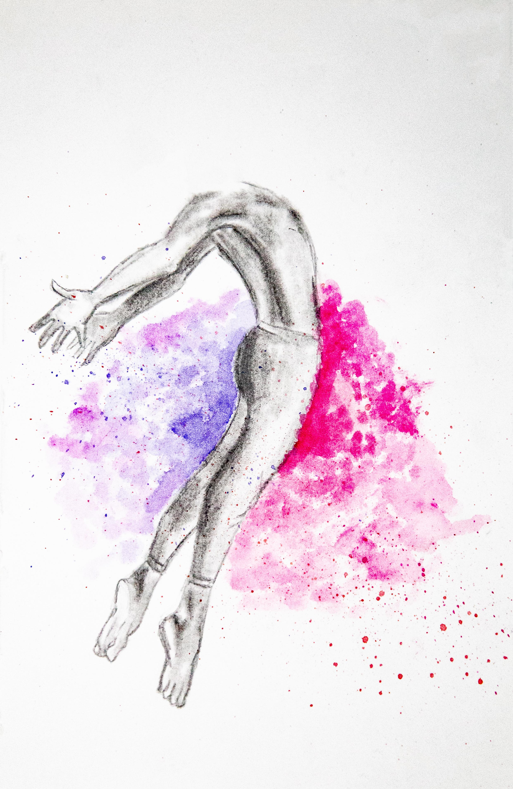
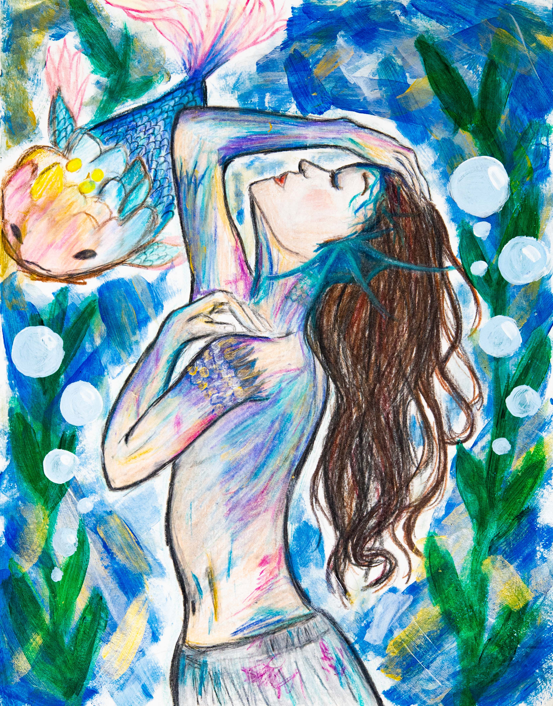
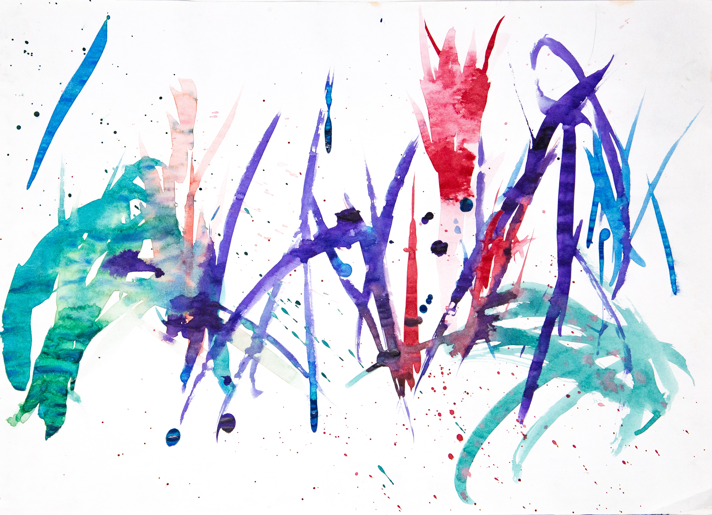
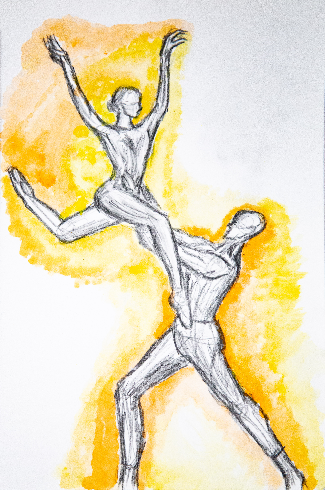
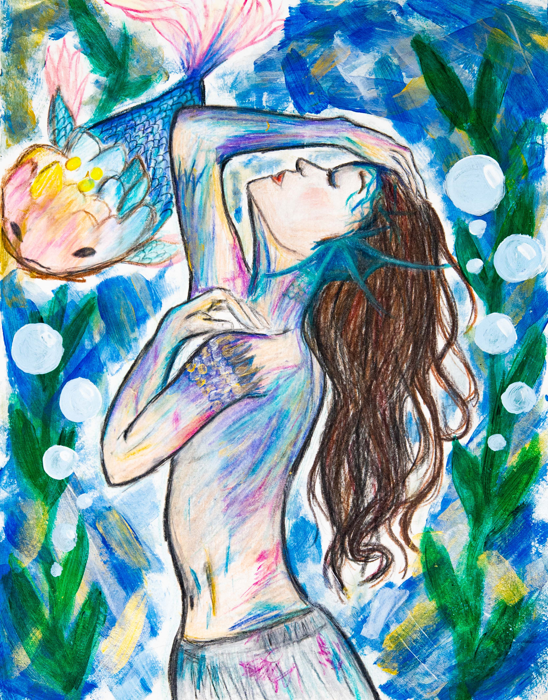
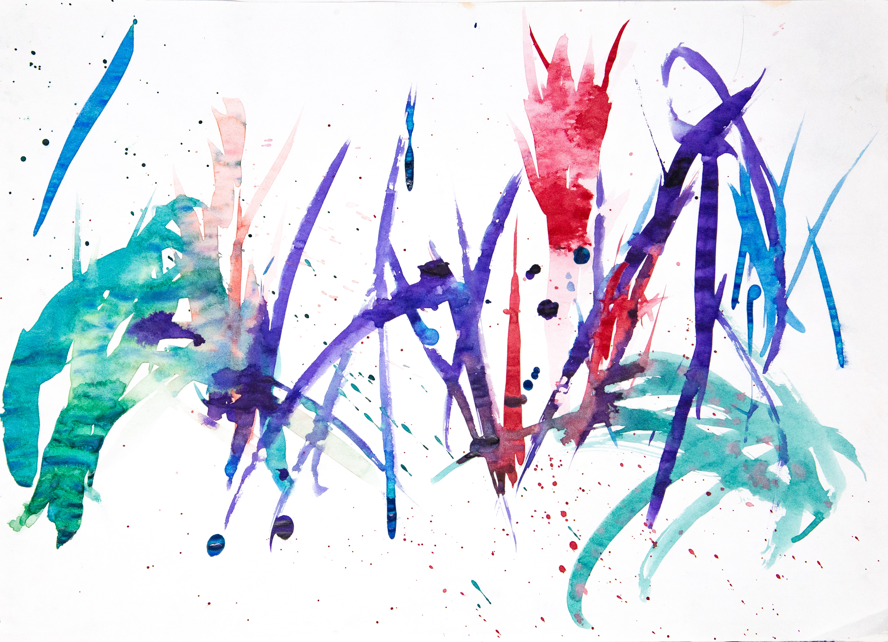
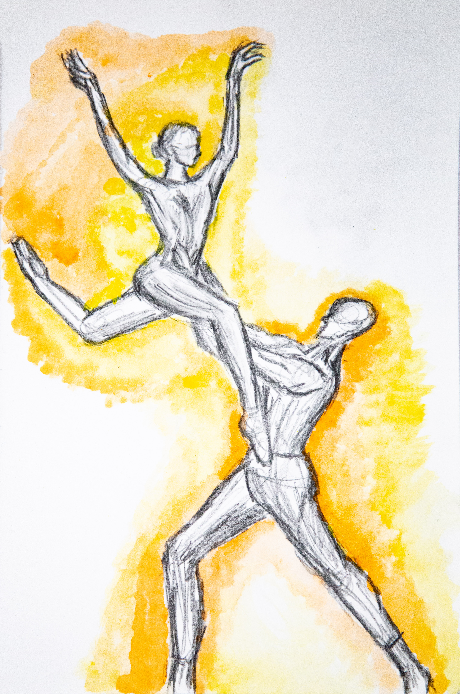

Sheryl Chang
Whenever “art” is mentioned, the first things that come to mind are paintings. And while drawing is a valid art form, I’ve grown to understand that it is more than just putting brush to canvas--it is applying human imagination to visually convey beauty and emotions through the body. As a child, “arts and crafts” translated to construction paper, paint, and glue. However, I've expanded my perspectives, through deep exploration of both visual and performing arts.
Hello! My name is Sheryl Chang and I am currently an aspiring dancer at UC Riverside. As an aspiring artist, I am trained in many styles of dance. In addition, I am building art, video, and dance portfolios as a way to express my creativity. In my career of over 16 years, I've competed regionally and nationally with the Dellos Studio Company for 10 years and received numerous awards and an invitation to compete in New Jersey at the REVOLUTION Nationals. I also love Korean Pop music, also known as K-Pop. Over the past six years, I have achieved 28,400+ Subscribers and over 2 million views through posting personal Dance, Singing, and Tutorial content. Through my Youtube career, I was invited and performed as the opening act for internationally acclaimed Korean-American singers, Ailee, Hyolyn, and Ha Dong Qn with a concert audience of over 3,000 attendees. I am currently a student and a private dance teacher, with 3 years of teaching experience, teaching children ages as young as preschoolers all the way to high schoolers. I taught fundamentals of dance through hip-hop, K-Pop, and physical activities to help students build kinesthetic skills and teamwork.
I always find joy in choreographing anything that comes my way. The stage allows my personal stories to spring to life, projecting my inner thoughts. Despite language barriers, these visualized stories bridge generations and cultures. Prolonged hours in the studio make my feet ache from dancing, yet still, I persist. My movements become strokes on a canvas, coloring the stage with each jump, turn, and gesture. Each lyric inspires my emotions to convey a deeper message. Choreographing, costuming, and set design is a puzzle--finding the right pieces to make the show come alive. Art, is communicating with my director and peers through the number of pieces, hoping for the best show yet. Once the music plays, I lose track of time, in a world of my own, creating another masterpiece. Performance allows me to truly express myself through voice, body, and abstraction on the stage. The art of movement challenges me as there is no right or wrong. The moment the lights flash on, the work I have prepared will be presented. The stage is set to be painted.
Experience
Marketing Intern
• Learned how build PC and how they work
• Used Social Media to promote company
• Created short Videos, ads, and videography
Executive Personal Assistant
• Responsible for carrying out dutiess
• Managed a listing for Peerspace
Dance Teacher
• Dance Tutorial Content
• K-Pop Dance and Vocal Cover Content
• Created tutorial content for audiences who enjoy dance
• Gained 2 million total views
Education
UC Riverside
University of California Riverside
University of California Riverside
Portfolio





 
